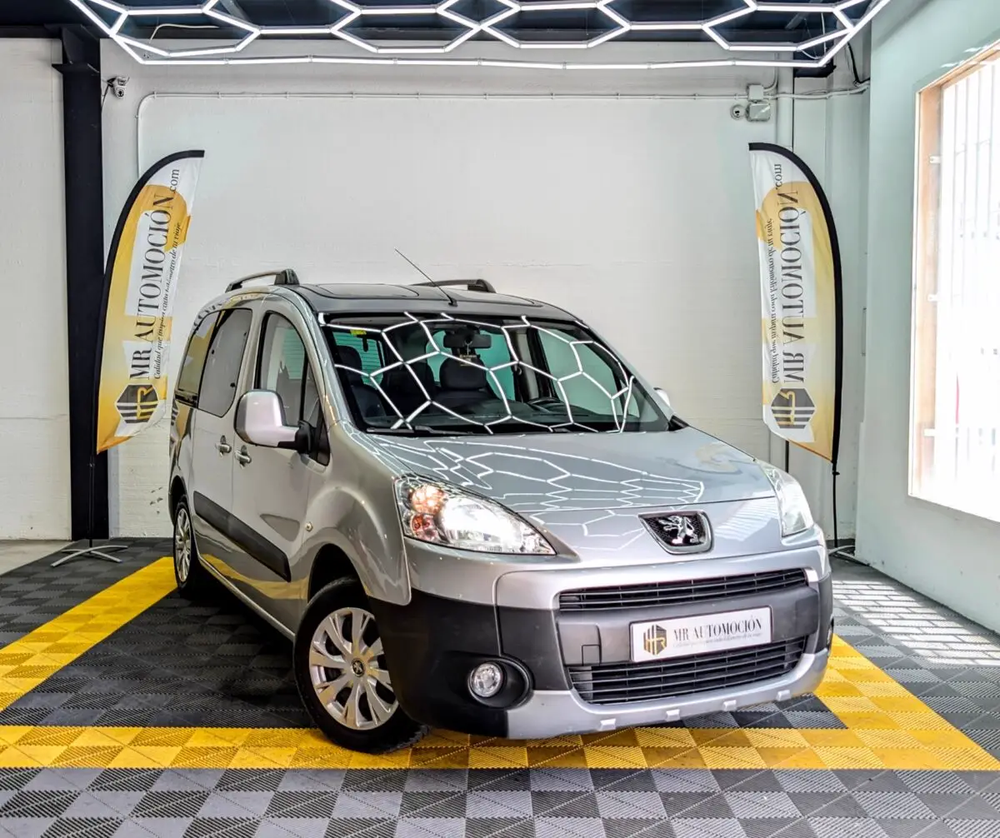

1 / 21Ponemos a la venta esta fantástica e impecable Peugeot Partner Individual (Partner OD Ranch) , una de las opciones más versátiles, prácticas y demandadas del mercado multiusos. Esta unidad, matriculada originalmente en marzo de 2010 , registra 182.000 km reales y plenamente certificados. Se encuentra en un excelente estado de conservación, con mantenimientos recientes de distribución, embrague y aire acondicionado , ideal tanto para el día a día en familia como para escapadas de fin de semana o actividades de ocio al aire libre gracias a su increíble espacio y modularidad.
Bajo el capó monta el fiable, duradero y eficiente motor diésel 1.6 HDi , un bloque mecánico de sobra conocido por su gran resistencia a largo plazo y sus consumos de combustible extraordinariamente bajos en todo tipo de trayectos. Toda la fuerza se gestiona mediante una caja de cambios manual de 5 velocidades, ofreciendo una conducción suave, cómoda y con un comportamiento dinámico idéntico al de un turismo convencional.
Equipamiento exterior Exclusivo techo Zenith: Equipa el sistema de techo modular más avanzado y buscado de la marca, que incluye cuatro cristales individuales fijos que inundan el habitáculo de luz natural, un arco central de almacenamiento translúcido y salidas de aireación adicionales para las plazas traseras.
Estética y practicidad: Carrocería acabada en un elegante color gris plata metalizado, paragolpes delantero con molduras protectoras integradas para el día a día, faros antiniebla delanteros y funcionales barras de techo longitudinales, ideales para portar cofres o soportes deportivos. Accesibilidad total: Doble puerta lateral corredera acristalada, lo que garantiza un acceso comodísimo a las plazas traseras en aparcamientos estrechos, combinado con un gran portón trasero de apertura vertical que facilita la carga del maletero al máximo.
Interior Modularidad y espacio interior: Configuración de 5 amplias plazas con asientos tapizados en una resistente tela oscura con costuras de contraste en azul. Los asientos traseros son individuales, completamente plegables y desmontables, permitiendo multiplicar la capacidad de carga del maletero en cuestión de segundos.
Climatización y puesto de mando: Aire acondicionado con mandos analógicos de fácil uso, elevalunas eléctricos, dirección asistida, espejos exteriores regulables eléctricamente y un salpicadero bitono de diseño ergonómico muy intuitivo. Capacidad de almacenamiento multiplicada: Gracias al sistema del techo Zenith, el habitáculo cuenta con guanteras superiores adicionales, redes de sujeción de objetos y una excelente distribución de huecos portaobjetos repartidos por todo el coche.
Seguridad y asistencia de confianza Dotado de sistema de frenos con ABS, múltiples airbags frontales y laterales, cierre centralizado desde el interior, anclajes de seguridad para sillas infantiles y una visibilidad periférica excelente gracias a su superficie acristalada ampliada. Tu compra segura con MRAutomoción: Disfruta de la polivalencia de este vehículo con la total transparencia y tranquilidad que te ofrece nuestro equipo profesional: ✅ Mantenimiento y revisión completa: Mantenimientos realizados recientemente de distribución, embrague y aire acondicionado.
Se entrega revisada completamente. ✅ Kilometraje certificado ✅ Garantía completa de 1 año (12 meses) incluida. ✅ Transferencia incluida: Precio definitivo llave en mano, sin sorpresas ni costes ocultos. ✅ Consúltanos nuestras ventajosas opciones de financiación flexible a tu medida.
| Marca | Peugeot |
|---|---|
| Modelo | Peugeot Partner Tepee 1.6 HDI Outdoor 2010 |
| Año | Mar 2010 |
| Kilómetros | 182.000 km |
| Combustible | Diésel |
| Cambio | Manual |
| Potencia | 90 CV |
| Garantía | 1 Año |
| IVA | NO DEDUCIBLE |
Quizá también te encaje